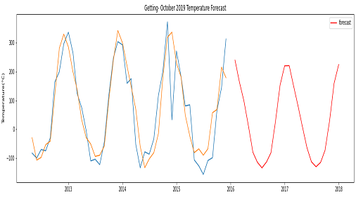
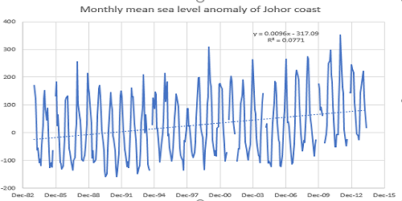
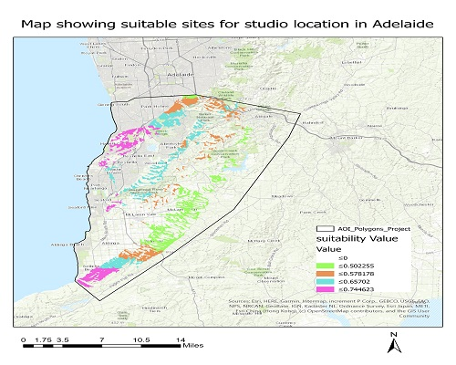
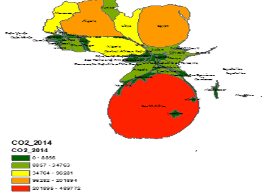
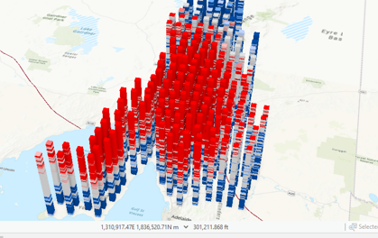
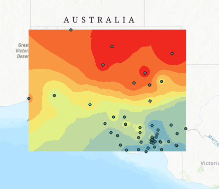

My personal projects are in the area of oceanography, machine learning, deep learning, GIS and Remote Sensing.

Forecasting Sea Level
I build models to predict the monthly relative and absolute sea levels of 21 tide gauge stations in Malysia using three autoregressive methods: LSTM, a deep learning framework, SVR a machine learning algorithm and ARIMA, a
statistical method. The data used includes the monthy tide gauge data between 1993 and 2018 and satellite altimetry data between 1993 - 2015.

Estimating 21st Century Sea Level Rise
Sea level rise is one of the most severe consequences of anthropogenic climate change and there has been an unprecedented rise in the global sea level since the start of the 20th century with adverse impacts on natural and human
systems of the coastal zones. I estimated the rise in Malaysia relative and absolute sea level between 1993 to 2018 from tide gauges and satellite altimetry data respectively using robust fit regression method to provide detailed sea
level info that are vital for coastal management

Review:Advances in Sea Level Monitoring
This study undertakes a systematic review of the current advances in estimating global and regional sea level change in the context of the 4th industrial revolution. Trends in the use of main observation systems such as tide gauges,
satellite altimetry, GNSS buoys and ancillary systems such as GRACE and PS-INSAR were explored. Further, we examined the role of emerging spatial data science concepts in sea level study, including techniques for data engineering,
visualization, and trend modelling. Findings suggest that in-situ sea level observation through tide gauges remains the best approach for long-term coastal sea level study despite its limitation while satellite altimetry is suitable
for contemporary global and regional scales.

Suitability Analysis
I performed weighted overlay multi-criteria Analysis to produce a suitability map that shows the best sites for the location of a studio within Adelaide, South Australia’s cosmopolitan coastal capital based on some sets of
preferential and constraining criteria that are decided after thorough consultation. The sites are preferred to be near the coast, close to but not within natural reserves and be on high terrains such that there is a view of the
nearby ocean.

Distribution of Litoria Peronii Frog
Identifying the distribution of events is vital to understanding the types of pattern which knowledge would suggest an underlying geographical phenomenon that are of interest to a geospatial analyst and/or give insight that would
otherwise be impossible. I employed Various techniques from simple statistical descriptions to density-based measures such as Global Density, Quadrat Count, Kernel Density and including the distance-based measures such as Average
Nearest Neighbour, Ripley’s K statistics to discover the spatial distribution of Peron's Tree Frog over Australia

GEO-APP for Emergency management
I developed a low-cost geographical application (Geo-App) to facilitate disaster preparation, mitigation, rescue and recovery through smart reporting, rapid response and data-driven decision making. Using ArcGIS and JAVASCRIPT API,
the Geo-App is an integrated system of two inter-working units. Leveraging the ubiquity of smartphones, the user unit supports participatory GIS functionalities such as listing relevant nearby agencies to the disaster scene and
providing optimal routes to these offices thus enabling real-time report of disasters and prompt intervention. The dashboard unit enables multi source integration of various data sources, display and analysis to identify vital spatial
pattern during disasters thereby providing pertinent real-time disaster information to emergency-response organizations, government agencies, local authorities, first responders and other stakeholders. This facilitates effective
decision making and faster rescue operations.

Carbon Emission Pattern
Visualizing and characterizing the spatial pattern of carbon emission and communicating these results to decision makers in a way that clearly represents the data and allows for comprehension remains a challenge in several African
countries. The use of conventional classic maps is prone to misinterpretation of data which hinders initiatives that are essential for minimizing carbon emission. This study addresses the problem by using GIS cartograms to model the
spatial distribution of carbon in 54 African countries.

South Australian Wheat Production: Trend and Pattern
The aim of this study is to employ the space-time pattern mining tools and techniques to derive an improved insight into the spatiotemporal pattern/trend of whield productivity in South Australia.
To achieve this, Emerging hotspot analysis was employed to identify the trends in the clustering of wheat yield in space-time cube based on Getis-Ord Gi* statistic and the Mann-Kendall trend test.
Then, local outlier analysis was used to identify significant clusters of high and low values and anomalous whose values are extremely different from spatial-temporal related neighbors based on Anselin’s Local Moran’s I statistics.
Finally, time-series clustering was used to determine and partitions the locations with similar characteristics into distinct clusters. 3D visualization of these analysis was created to improve the visual perspective..

Modelling sea level: Review
This is a systematic review of the various approaches used in the literature for modelling sea level rise. In addition to the exploration of the two fundamental approaches- Physical (or Process) model and Semi-Empirical model, the
study also discussed analytical approaches with ability to analyze past behavior of sea level time series, obtained through observation, to identify space and time pattern and make appropriate forecasts about the future.

Exploring spatial interpolation models
In this study, different deterministic and geostatistical interpolation methods are explored to compare their performance towards establishing the best model for interpolating air temperature at various monitoring sites
in South Australia. The data was acquired from Climate Data Online (CDO) platform maintained by the National Climate Data Centre (NCDC). Interpolation of the models are done with 50 stations
while 10 station are used for validation. The correlation for the five models showed that Empirical Bayesian Regression Kriging with R2 of 0.95 outperforms Radial Basis Function,
Empirical Bayesian Kriging, Local Polynomial order 1 and Ordinary Kriging with R2 of 0.94, 0.94, 0.93 and 0.92 respectively.

HOOH-SEA APP using Google Earth Engine (ongoing).
HooH-Sea Application uses earth satellite data to monitor the impacts of lockdown on the maritime economy of Asian countries and the corresponding environmental consequences.
It provides timely information in supporting crisis management, security, economic activities and environment.
A minimal version of the applications that I developed has a map widget and chart panel for monitoring NO2 emissions and ship traffic.
This application for the NO2 monitoring can be assessed here. The application, in its full development phase, will be an integrated system of the emission and
ship traffic monitoring apps with user friendly map, a dashboard, data explorer and visualization panels for monitoring shipping activities and air pollutants around south east countries as indicators of the impacts of covid-19 on economic activities in this region.